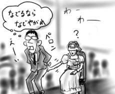

今日は同僚の結婚披露パーティに出かけました。新郎は、結婚前は部内でも有名な遅刻魔だったのですが、今日もしっかり遅刻していたので、徹底しているなあと思いました。パーティは夕方からでしたが。
パーティでは、感動的な音楽の中、楽しく執り行われましたが、なぜかBGMにNHKスペシャル「映像の20世紀」テーマ曲が紛れ込んでおり、それを聞いた途端に「1945年8月6日午前8時15分、日本に、原爆が投下されました。死者は、14万人に登ると推定されています… 」といったようなNHK喋りの女性ナレーションが聞こえはじめ、目の前にコマの荒い白黒画像が見えてきました。確かに心は大きく動きますが、方向性が違うのでは。大変です(僕の頭が)。
パーティでは目隠しした新婦にケツを撫でられる(新郎をケツで見分けるゲームで)など、なかなかに大サービスしてきたと思います。末永くお幸せに。でも、どうして退場のBGMが林原めぐみなんだろう。誰のチョイス？など、脳内ノイズも多かった気がします。申し訳ない。
BGMを気にしすぎるのは、よくない(田口トモロヲボイスで)。
(2002/8/8)
一部ではすでに話題のAkufen「My Way」(Force Inc)を週末に入手したのですが、後半の展開が素晴らしくカッコよくて、しばらくプレイヤに半田付け状態にしたいと思います。様々なサンプリングの断片を繋ぎ合わせることで、ディスコ/ファンク/ハウスと呼ばれるようなグルーヴが産み出されて行きます。おもしろい。ここ最近では一番のヒットです。
と思ったら、CDを買った、まさにその日にAkufenはMILLE PLATEAUX NIGHTで来日してたらしいじゃないですか。早く言ってヨ！おもいっきり生ライブを逃しました。
そういえば、Autechre「Gantz Graf」(Warp)もDVD付きに惹かれて買ったのですが、このDVDで見られる表題曲のPVが死ぬほどカッコよくてたまりません。フラットシェーディング、ワイヤフレーム、メカ、ビーム、衝撃波が好きな人(狭っ！)は必見じゃん。うーわー。
夜は久しぶりに平岩と電話で話したのですが、話題はここしばらくの猛暑っぷりに終始していました。言われてみれば、確かに今年はろくに蝉の鳴き声を聞いていない気がします。腹を見せて身動きしない蝉であれば、玄関の外に何匹か転がっていますが。
これだけ暑いと、
- 何だかよくわからない細菌(12モンキーズとかそういう名前の)が発生して人類は地上に住めなくなるよ。
- 下手すると、来年あたりに氷河期とか来るよ。
- 明日から始まるコミケでは今度こそ死人が出るよ。(黒装束、ピンクハウス、ケルベロスあたりが)
さて、どれかな。
(2002/8/7)
実家ではいろいろと書けないくらいのデス事が盛り沢山でした。一言で言うとしたら「みのさん！出番です！」が一番しっくりするかと思います。それで察して下さい。
ジンマシンはすぐに引きましたが、実家にいると頭にモヤがかかったようになり、あまり考え事が出来なくなって日記も全く書き進めることが出来ませんでした。なんとか以前のペースを取り戻したので今日からゆっくり通常運転したいと思います。
実家にいる間はあまりにデスだったので、スティーブン・ジェイ・グールド博士の『ワンダフル・ライフ 〜バージェス頁岩と生物進化の物語』(早川NF文庫)を読み返しながら、５億年前の奇天烈おもしろ生物に思いを馳せ、人間なんてこの長い進化の歴史から見れば消し炭みたいなものだなぁ、という感想を抱くという間違ったバランスの取り方をしていました。
しかし、グールド博士もすでに故人。実家が放つ「老い」と「滅び」のイメージからはなかなか逃れられません(考え過ぎ)。
こちらに戻って来てすぐに靴を新調したのですが、先日部屋に戻ってくると、孵化したばかりの"黒き悪魔"が玄関をウロついていたので、条件反射で思わず踏み潰してしまいました。おNewシューズにいきなりの汚点が！
いや、この場合は黒星でしょうか？(文字通り)